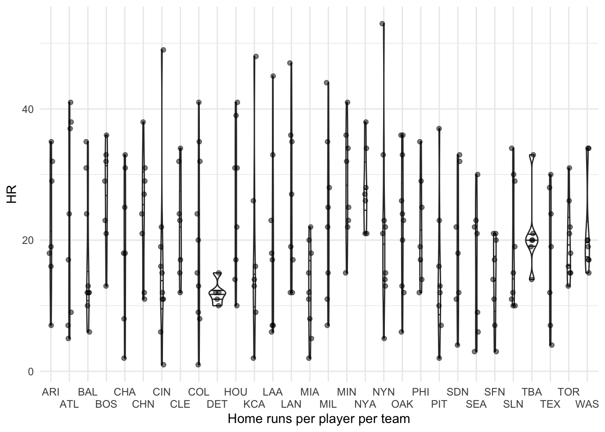
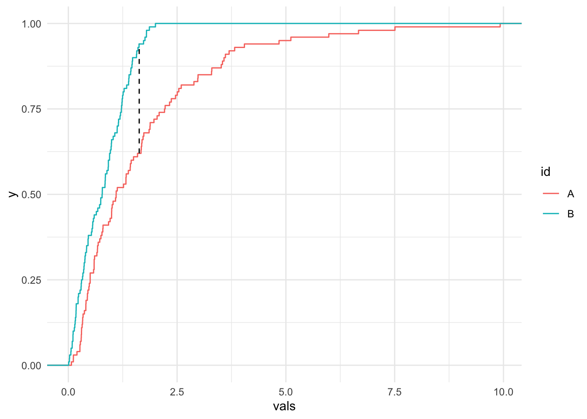

library(Lahman)
library(tidyverse)
theme_set(theme_minimal())Application Exercise: Density Graphs
Packages
Data
home_runs <- Batting |>
filter(
G >= 100 |
(G >= 40 & yearID == 2020) |
(G >= 70 & yearID == 1994),
yearID > 1920,
lgID %in% c("AL", "NL")
)Exercise 1
Simple Example
A player gets a “hit” when they successfully hit the ball and get on base. Plot the density of the hits per player per year. Does this data look normal? Why or why not?
ggplot(home_runs, aes(H)) +
geom_density() +
xlab("Hits per player per year")Overlapping Example
Plot the density of the number of home runs per player per year for each lgID (league). Which league seems to hit more homeruns? Is there a clear way to tell? More on this later.
home_runs |>
ggplot(aes(HR, color = lgID)) +
geom_density() +
xlab("Home runs per player per year by league")Homeruns by each team in a given year
a. Make a violin plot for the home runs in year 2019, with a violin for each team. What’s wrong with the plot?
home_runs |>
filter(yearID %in% 2019) |>
ggplot(aes(HR, x = factor(teamID))) +
geom_violin(draw_quantiles = c(0.25, 0.5, 0.75)) +
geom_jitter(
height = 0,
width = 0.1,
alpha = 0.5
) +
xlab("Home runs per player per team") +
scale_x_discrete(guide = guide_axis(n.dodge = 2))
b. Improve the plot with a ridge plot. Set the bandwidth to 2.
library(ggridges)
home_runs |>
filter(yearID == 2019) |>
ggplot(aes(
x = HR,
y = teamID
)) +
stat_density_ridges(
mapping = aes(fill = factor(after_stat(quantile))),
geom = "density_ridges_gradient",
calc_ecdf = TRUE,
quantiles = c(.25, .50, .75, .95),
quantile_lines = TRUE,
scale = 2,
rel_min_height = 0.01,
bandwidth = 2
) +
scale_fill_viridis_d(
name = "Quantiles",
labels = c("0", "25th", "50th", "75th", "95th")
) +
geom_jitter(
height = 0.2,
width = 0,
alpha = 0.3,
) +
scale_x_continuous(name = "Home runs per player per team", limits = c(0, 60)) +
ylab("Year")Warning: Using the `size` aesthietic with geom_segment was deprecated in ggplot2 3.4.0.
ℹ Please use the `linewidth` aesthetic instead.Exercise 2
Bandwidth Illustration
Use bw.nrd0 to calculate a bandwidth for the example data. Make a single density plot with a density line for:
- The entire data
- Each id in the example data
- Each id in the example data using the calculated bandwidth. (Using a dashed line)
In addition, add a geom_point at each observed value with y=0.1.
What do you notice about the different curves? Which id has a higher standard deviation?
example_data <- data.frame(
val = c(
rnorm(25, mean = 3, sd = 0.5),
rnorm(15, mean = -1, sd = 2)
),
id = c(rep("A", 25), rep("B", 15))
)
bw <- bw.nrd0(example_data$val)
ggplot(example_data, aes(val)) +
geom_density() +
geom_density(aes(color = id)) +
geom_density(aes(color = id), linetype = "dashed", bw = bw) +
geom_point(aes(x = val, y = 0.1, color = id), alpha = 0.5)Bandwidth Selection and Kernels
Repeat the steps above with the same data but use the Sheather-Jones estimate and a different Kernel. Do either of these changes improve the issue from above?
bwsj = bw.SJ(example_data$val)
ggplot(example_data, aes(val)) +
geom_density(kernel = "triangular") +
geom_density(aes(color = id), bw = "SJ", kernel = "triangular") +
geom_density(aes(color = id), linetype = "dashed", bw = bwsj, kernel = "triangular") +
geom_point(aes(x = val, y=0.1, color = id), alpha = 0.5)Day 2
Exercise 1
ECDF
What is the value of ECDF of the homeruns per player per year at each multiple of 10? Using the value of the ECDF at 70, calculate how many times a player has hit more than 70 homeruns in a year.
hr_ecdf <- ecdf(home_runs$HR)
hr_ecdf(0:8 * 10)[1] 0.03545903 0.50623303 0.79112416 0.93024544 0.98382182 0.99789462 0.99961217
[8] 0.99994460 1.00000000(1 - hr_ecdf(70)) * nrow(home_runs)[1] 1KS-Test
Using the given function, plot the KS statistic and ECDFs of two sets of random values (you pick the random values). Carry out the test and interpret.
get_ks_df <- function(dat1, dat2) {
# Make ECDF of each set of data
ecdf1 <- ecdf(dat1)
ecdf2 <- ecdf(dat2)
# Calculate the absolute difference between the 2 ECDFs on the support
grid_points <- seq(0, max(c(dat1, dat2)), length.out=1000)
differences <- abs(ecdf1(grid_points) - ecdf2(grid_points))
# Get the KS statistic and where it occurs
ks_stat <- max(differences)
first_max_location <- grid_points[which.max(differences)]
# Return DF to help with plotting
data.frame(
x = first_max_location,
xend = first_max_location,
y = ecdf1(first_max_location),
yend = ecdf2(first_max_location)
)
}
num_points = 100
val_1 = rlnorm(num_points)
val_2 = abs(rnorm(num_points))
my_data <- data.frame(
vals = c(val_1, val_2),
id = c(rep("A", num_points), rep("B", num_points))
)
ggplot(my_data, aes(vals, color = id)) +
stat_ecdf(geom = "step") +
geom_segment(
data = get_ks_df(val_1, val_2),
aes(
x = x,
y = y,
xend = xend,
yend = yend
),
color = "black",
linetype = "dashed"
)
ks.test(val_1, val_2)
Asymptotic two-sample Kolmogorov-Smirnov test
data: val_1 and val_2
D = 0.32, p-value = 7.143e-05
alternative hypothesis: two-sidedExercise 2
Working through the example
Run the code below to do a similar example to the one on the slides:
ks_matrix <- tribble(~year1, ~year2, ~ks_stat, ~p_value)
home_runs_to_search <- home_runs |> select(yearID, HR) |> filter(yearID > 1994)
all_years <- unique(home_runs_to_search$yearID)
options(warn = -1) # Turn off ks.test warning
for (year1 in all_years) {
year1HR <- home_runs_to_search |> filter(yearID == year1)
for (year2 in min(all_years):year1) { # Only do half since the test is symmetric
if (year1 == year2) {
next
}
year2HR <- home_runs_to_search |> filter(yearID == year2)
test <- ks.test(
year1HR$HR,
year2HR$HR
)
ks_matrix <- ks_matrix |>
add_row(
year1 = year1,
year2 = year2,
ks_stat = test$statistic,
p_value = test$p.value
)
}
}
options(warn = 0)What is each column in the dataframe?
head(ks_matrix)# A tibble: 6 × 4
year1 year2 ks_stat p_value
<int> <int> <dbl> <dbl>
1 1996 1995 0.100 0.225
2 1997 1995 0.0835 0.443
3 1997 1996 0.0678 0.668
4 1998 1995 0.0693 0.655
5 1998 1996 0.0642 0.705
6 1998 1997 0.0427 0.982Adjustments
Why did we copy half the matrix? What does the head of the new data look like?
half_matrix <- ks_matrix |>
mutate(
p_holm = p.adjust(p_value, "holm"),
p_hochberg = p.adjust(p_value, "hochberg"),
p_hommel = p.adjust(p_value, "hommel"),
p_bonferroni = p.adjust(p_value, "bonferroni"),
p_fdr = p.adjust(p_value, "fdr"),
p_BY = p.adjust(p_value, "BY")
)
other_half <- half_matrix |>
mutate(
tmp_year1 = year1,
year1 = year2,
year2 = tmp_year1
) |>
select(-tmp_year1)
ks_matrix <- bind_rows(half_matrix, other_half)
head(ks_matrix)# A tibble: 6 × 10
year1 year2 ks_stat p_value p_holm p_hochberg p_hommel p_bonferr…¹ p_fdr p_BY
<int> <int> <dbl> <dbl> <dbl> <dbl> <dbl> <dbl> <dbl> <dbl>
1 1996 1995 0.100 0.225 1 0.999 0.999 1 0.432 1
2 1997 1995 0.0835 0.443 1 0.999 0.999 1 0.639 1
3 1997 1996 0.0678 0.668 1 0.999 0.999 1 0.822 1
4 1998 1995 0.0693 0.655 1 0.999 0.999 1 0.815 1
5 1998 1996 0.0642 0.705 1 0.999 0.999 1 0.859 1
6 1998 1997 0.0427 0.982 1 0.999 0.999 1 0.999 1
# … with abbreviated variable name ¹p_bonferroniPivot longer by adjustment
Show the result of matrix after we pivot by adjustment and cut by significance.
for_plotting <- ks_matrix |>
pivot_longer(
c(
"p_holm",
"p_hochberg",
"p_hommel",
"p_bonferroni",
"p_fdr",
"p_BY"
),
names_to = "adjustment",
values_to = "adjusted_p"
) |>
mutate(signif = cut(
adjusted_p,
breaks = c(0, 0.001, 0.01, 0.05, 0.1, 1.001),
labels = c("<0.001", "<0.01", "<0.05", "<0.1", "<1"),
include.lowest = T,
))
head(for_plotting)# A tibble: 6 × 7
year1 year2 ks_stat p_value adjustment adjusted_p signif
<int> <int> <dbl> <dbl> <chr> <dbl> <fct>
1 1996 1995 0.100 0.225 p_holm 1 <1
2 1996 1995 0.100 0.225 p_hochberg 0.999 <1
3 1996 1995 0.100 0.225 p_hommel 0.999 <1
4 1996 1995 0.100 0.225 p_bonferroni 1 <1
5 1996 1995 0.100 0.225 p_fdr 0.432 <1
6 1996 1995 0.100 0.225 p_BY 1 <1 Visualize the corrections
Which adjustment would you pick?
ggplot(for_plotting, aes(
x = year1,
y = year2,
fill = factor(signif)
)) +
geom_tile() +
scale_x_continuous(breaks = 1920 + seq(0, 10) * 10) +
scale_y_continuous(breaks = 1920 + seq(0, 10) * 10) +
scale_fill_manual(values = c(colorspace::heat_hcl(4), "#AAAAAA")) +
labs(
x = "Year",
y = "Year",
fill = "Significance"
) +
facet_wrap(~adjustment) +
coord_fixed() +
theme(
axis.text.x = element_blank(),
axis.ticks.x = element_blank(),
axis.text.y = element_blank(),
axis.ticks.y = element_blank()
)
Annotations
Pick an adjustment and graph it. Add an annotation for at least one pair of years and add what a statistician might conclude from the p-value.
mat_BY <-
for_plotting |>
filter(adjustment == "p_BY") |>
ggplot(aes(
x = year1,
y = year2
)) +
geom_tile(aes(fill = factor(signif))) +
scale_x_continuous(breaks = 1990 + seq(0, 30, 2)) +
scale_y_continuous(breaks = 1990 + seq(0, 30, 2)) +
scale_fill_manual(values = c(colorspace::heat_hcl(4), "#AAAAAA")) +
labs(
title = "BY adjusted p-values matrix",
fill = "Significance",
x = "Year",
y = "Year"
) +
coord_fixed()
description <-
"The years 2005 and 2017 had significantly different distributions of homeruns per player." |>
str_wrap(width = 40)
mat_BY +
annotate(
"rect",
xmin = c(2004.5, 2016.5),
ymin = c(2016.5, 2004.5),
xmax = c(2005.5, 2017.5),
ymax = c(2017.5, 2005.5),
color = "#0000FFaa",
alpha = 0,
size = 1.5
) +
annotate(
"label",
x = 2000,
y = 2010,
label = description,
alpha = 0.9,
size = 3
)Warning: Using `size` aesthetic for lines was deprecated in ggplot2 3.4.0.
ℹ Please use `linewidth` instead.